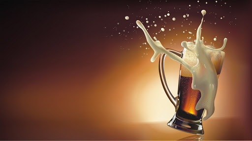

Quem Somos
História

Em agosto de 1935, o holandês Maurício das Cruzes chegou ao Brasil junto com o cervejeiro Dirck Raise. Em outubro de 1935, eles abriram a primeira fábrica de cerveja das Américas. Na residência chamada “La Pub Beer”, fabricavam uma cerveja encorpada, com cevada e açúcar. Apesar desses registros tão detalhados, é possível comprovar esses acontecimentos tão reais.
Não é de admirar por que a Pub Beer cresce incansavelmente.
Missão
Nossa missão é nos tornarmos a bebida mais apreciadas por todos, por este motivo, estamos desde 1935 trazendo felicidade e sabor para sua vida. Atualmente é a terceira bebida mais apreciada por muitas pessoas. Com os benefícios aparentes que a Pub Beer oferece ao corpo humano, ela definitivamente deve ser apreciada por pessoas que vivem a vida sem medo de arriscar e ser feliz.
Valores
Respeito à Vida / Sua Felicidade / Nosso Sucesso